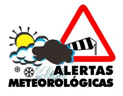
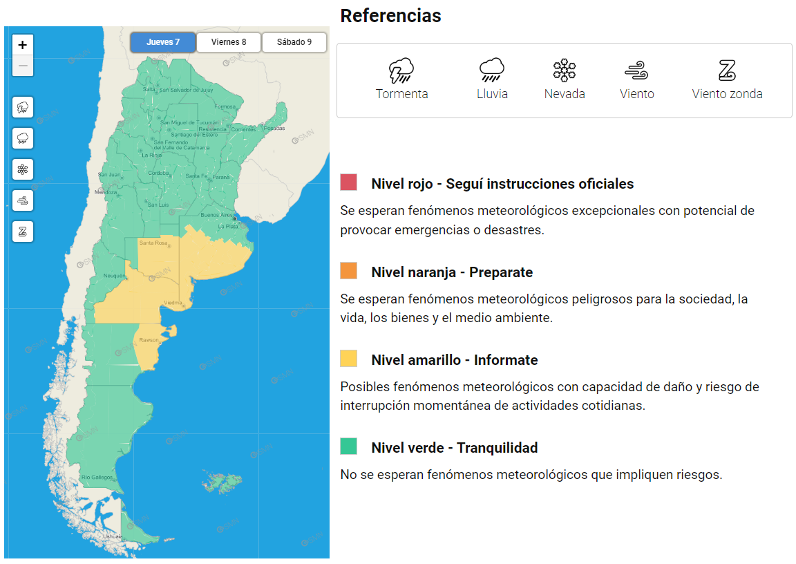

Alerta activa
A pesar de estar alejándose del territorio mexicano, Bonnie se continúa intensificando y provocará intensas lluvias en varias entidades.

El Servicio Meteorológico Nacional ha informado que Bonnie se ha intensificado a huracán categoría 3 en la escala Saffir-Simpson, frente a las costa mexicanas del Oceáno Pacífico. El ciclón se ubica a 350 km al sur-suroeste de Punta San Telmo, en Michoacán y a 400 km al suroeste de Zihuatanejo, en Guerrero, con vientos sostenidos de 185 km por hora y rachas de hasta 220 km por hora. Provocará intensas lluvias en entidades como Jalisco, Colima, Michoacán, Guerrero y Oaxaca.
Bonnie mantiene una trayectoria hacia el nor-noroeste (280°) a una velocidad aproximada de 22 km por hora, es decir, se aleja de forma gradual del territorio nacional. Sin embargo, se estima que su presencia genere precipitaciones en el occidente, centro y sur del país. Ante el incremento de cuerpos de agua como ríos y arroyos, así como el aumento en el riesgo de deslaves e inundaciones, las autoridades piden extremar precauciones a la población que habite las entidades antes mencionadas y atender las indicaciones emitidas por el Sistema Nacional de Protección Civil.
Las regiones afectadas:
Pacífico Centro:Ambiente fresco con bancos de niebla en zonas serranas durante la mañana, y cálido por la tarde en la región. Viento con rachas de 60 a 70 km/h y oleaje de 2 a 4 metros de altura en costas de Jalisco (sur), Colima y Michoacán.
Pacífico Sur: Por la tarde, ambiente cálido en la región y caluroso en costas. Viento con rachas de 60 a 70 km/h y oleaje de 2 a 4 metros de altura en costas de Guerrero (occidente) y viento con rachas de 50 a 60 km/h en Oaxaca y Chiapas.
Pacífico Norte: Ambiente templado por la mañana con cielo medio nublado en Sinaloa y con nubosidad dispersa en Sonora; ambiente caluroso a muy caluroso e incremento de la nubosidad durante la tarde, con lluvias puntuales fuertes en Sinaloa, e intervalos de chubascos en Sonora, acompañados de descargas eléctricas y posible caída de granizo. Viento del sur y suroeste de 10 a 25 km/h con rachas de 45 km/h.
Mapa de alerta

El nuevo sistema de alerta no solo implica un cambio en la elaboración de los alertas, sino que también modifica la forma en la que los comunicamos. Su mayor diferencia se encuentra en que este nuevo sistema es más visual, lo que resulta ventajoso al momento de identificar rápidamente una amenaza. Pero también conlleva el desafío de comunicarlo oralmente, por ejemplo, en una entrevista telefónica. Por eso, debemos comprender a fondo esta herramienta para ser capaces de transmitir a la población un mensaje de calidad y oportuno.
Este documento pretende constituirse en un material de referencia para las personas que diariamente o de manera eventual comunican la información meteorológica a los diversos tipos de usuarios. Todo aquel que se encuentre en la situación de informar sobre un alerta, un aviso a corto plazo o una advertencia debe haber leído este manual y ajustarse a lo que en él se define.
De esta forma, buscamos asegurar un alto nivel de calidad de las comunicaciones institucionales, con información unificada y consolidada en el organismo.